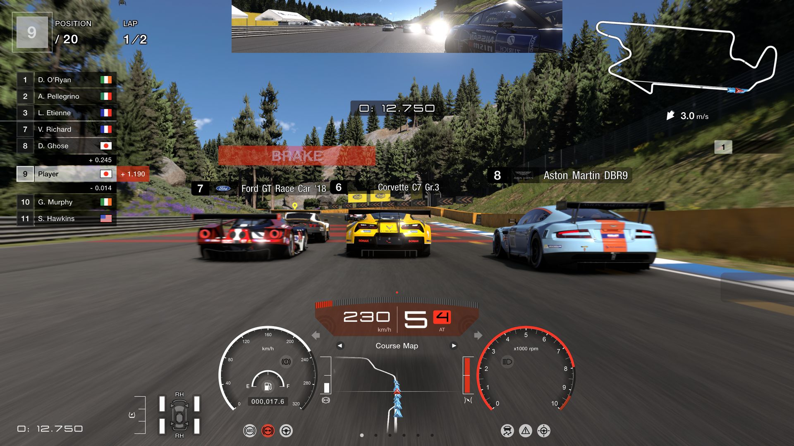

Realism was once again an improvement on existing graphics, becoming popular in the late 2010s and continuing today. Once again, these graphics aim to immerse the player in the game. Realism graphics aim to make the game as lifelike as possible, which requires attention to detail, from minute details in a scene to making in-game characters move as realistically as possible.
Games like Red Dead Redemption 2 show the extent of realism graphics. This open world is expansive and immersive, and part of this is attributed to the realistic graphics.
Gaming consoles that feature Realism graphics include PlayStation 5 and Xbox One.
